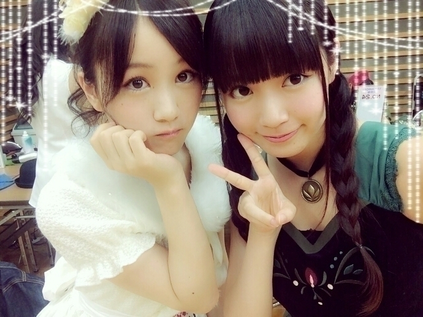
Secret HoneyさんのTwitterに
ひめたん登場していたことをスタッフさんから聞きました\( ˆoˆ )/♡
このワンピースだよ～
まだハロウィン当日 何着るか
迷ってるおにゃのこは
ぜひひめたんとおそろいしよ！
実は月刊エンタメで着た
このジャンパースカートも
Secret Honeyさんの\❁/
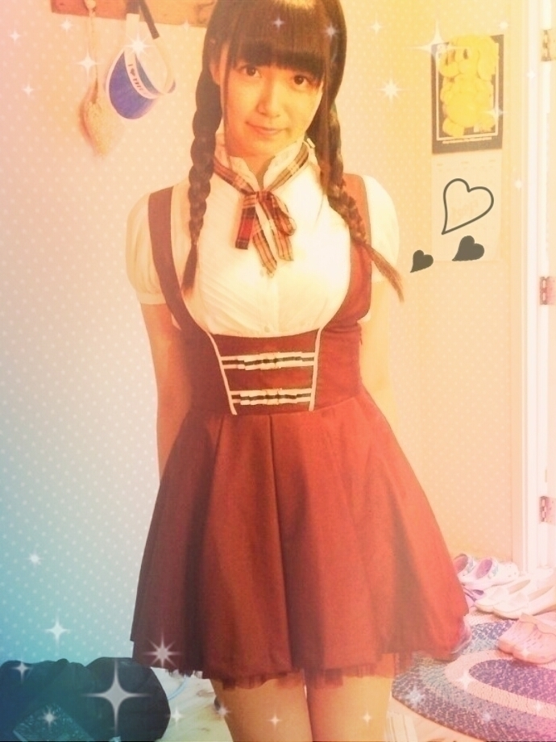
偶然なんだけど どちらも
三つ編みしてるね～
あ、そうそう
火曜日のめざましテレビに
登場しました(´pωq`)
観てくれたひとありがとう！
めざましジャンケンもやったよ～
予告してなくてごめんね
地元のおともだちからたくさん
連絡来て嬉しかった☆
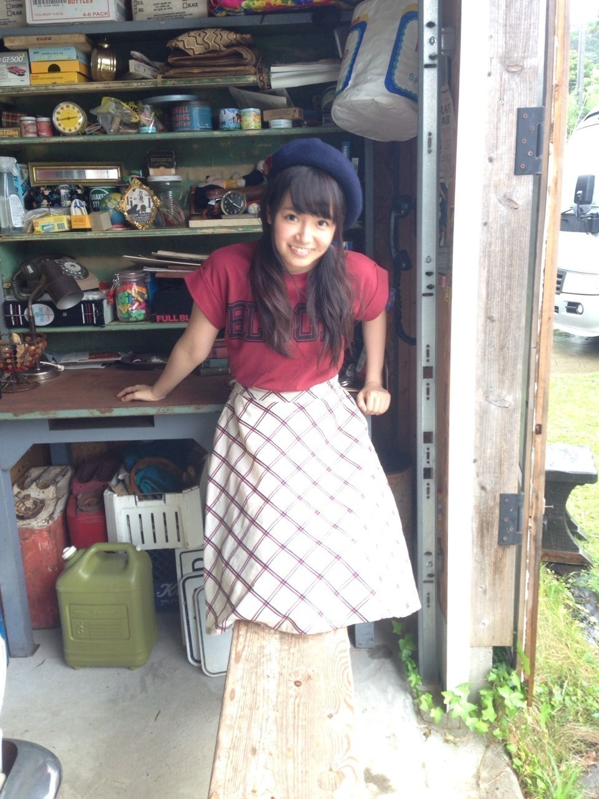
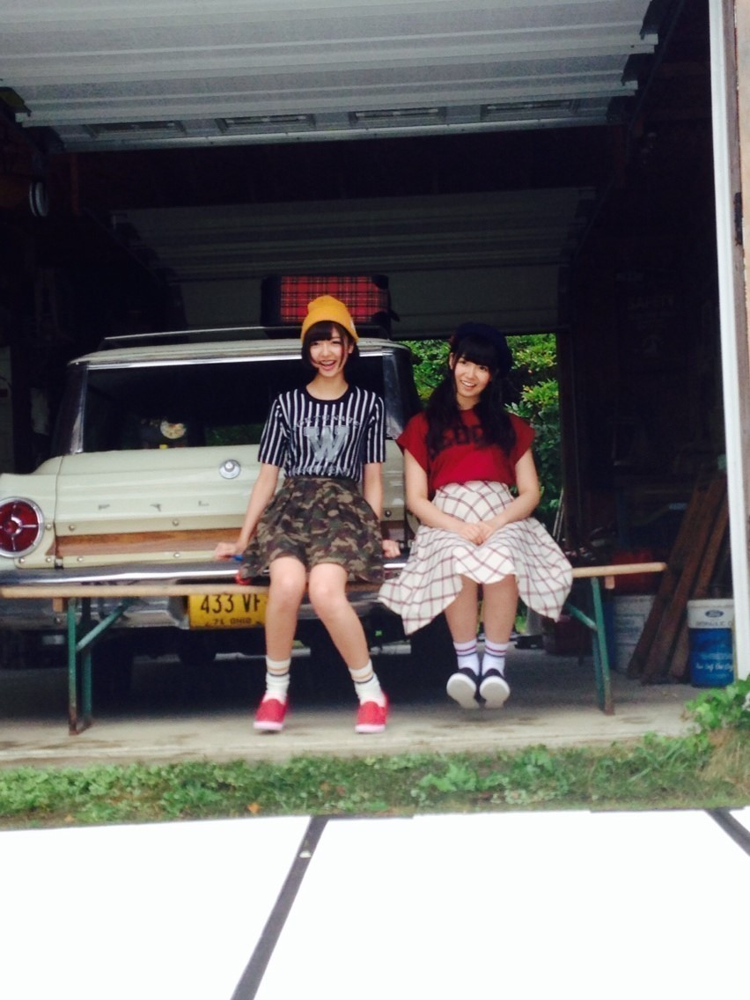
ついでにエンタメのオフショット
のぎ天は久々の登場～
ゴルフサークル発足しました！
ゴルフみんなやったことある？
ひめは人生初ゴルフだったよ～
次回の横浜全握握手は
せいらりんとペアです(＊＾ω＾＊)
え！絶対楽しい！
このレーン絶対楽しいよ
このレーン絶対楽しい！
あ、そうそう
みなさんからのプレゼント
受け取りました(っ´ω`c)
ありがとう！大切にします♡
 ふと思ったのですが
ふと思ったのですが
ひめたんはピアノ弾けますか？今となっては全く弾けませんが
一応6年間やってたよ(^o^)
乃木坂はピアノ経験ある人多いよね
男子でなで肩ってどう思いますかいいと思う！
リュック大変なんだよね(´・ω・｀)
ひめたんはリュック好きなひとなので
応援します！頑張れなで肩男子！
ひめたんは好きな
かわいい系のキャラクターいますか？くまのがっこうのジャッキーちゃん
ぼんぼんりぼんちゃん、マイメロちゃん♡
早稲田祭は出るんかな？？出ます！楽しみ( ^o^ )
ひめたんはじめての学祭♡
月刊少女野崎くんで好きなキャラは～？この質問ちょっと前にも
答えたことあったんだけども補足したい！
結月すき( ˇωˇ )
あんな子ひめの周りにはいないから惹かれる～
千代ちゃんも相変わらず好きだよ！
ひめたんの使ってる
リップクリームは何ですか？？おそとではVaselineのチューブ、
おうちではVaselineの大きいやつ。
前に使ってたリップがなくなって
メイクさんに教えてもらいました～＊
日芽香の花言葉はなに？ 好きな花はマーガレットだよ❁
ひめの代わりにどなたか
調べてみて(´pωq`)
いつもたくさんのコメント
ありがとうございます
みんなハロウィンの予定
教えてくれてありがとう！
なんかね今年のハロウィンは
平日なんだよねー
かぼちゃスイーツ食べるひと多かった～
ここ最近時間なくて
なんか今日の日記はそっけないなあ
ごめんね( >_< )
こんなノリの日もあってもいいかな～？
あー昔の自分に戻りたい！切実！
(＊´・ω・＊)
めざましテレビpresents T-SPOOK
～TOKYO HALLOWEEN PARTY～
に出演させていただきました\( ˆoˆ )/
パレードの衣装
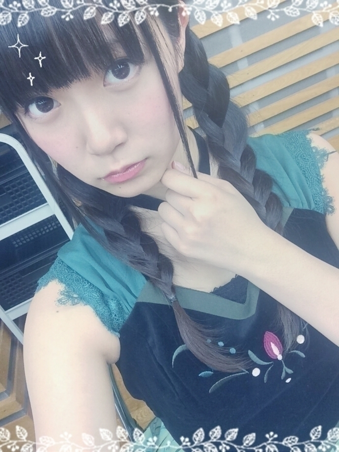
れりご～れりご～
とある雪の女王風ワンピース
三つ編みもしたんだよ
∋∞(⁘˙ỏ˙⁘)∞∈
＼ れりご～ ／
∋∞(⁘˙ỏ˙⁘)∞∈
歌衣装
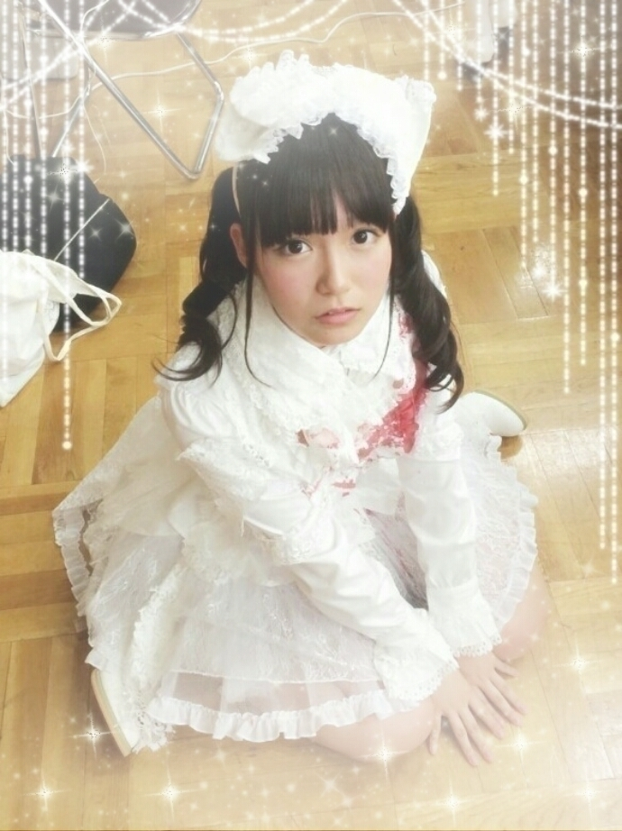
ロリータワンピース × 血 ( º∀º )･∵.
血糊だよ( º∀º )･∵.
りぼんおっきいっしょー
さすがひめたんって褒められたよ♡
パレードは
フジテレビの周りを
みんなで練り歩きしました❁
遊びに来てくださったみなさんも
仮装しててステキだった(´pωq`)
ライブでは主にまいまいのポジションで
踊ることが多かった～
乃木坂の出番はラスト
このハロウィンイベントのクライマックスを
任せていただきました(；ω；)
みなさんと一緒に楽しい時間が過ごせて
ステキなハロウィンになりました♪
来てくださったみなさんも
応援してくださったみなさんも
本当にありがとうございました！
このお仕事をしてると毎年
ハロウィン来るのほんとに楽しみなんだ～
みなさんも学校や会社で
賑やかなハロウィンパーティーして
楽しんでね乁( ˙o˙ 乁)♡
SamuraiELO
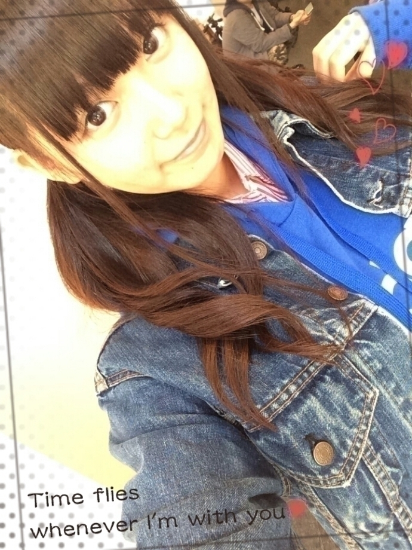
テーマはボーイズ風ファッション。
普段の雰囲気とは違った感じで
ジーンズなんて着ちゃってますよ☆
男性にして欲しいファッションとか
語っちゃったりしてるので
チェックして欲しいなって思っちゃったり
(↑口調がいちいち面倒くせえ奴)
でもほんとに、こんなひめたん
なかなか見れないよ～
他にも乃木坂ちゃん
たくさん載ってて楽しいよ～
まいやん表紙が目印だよ！
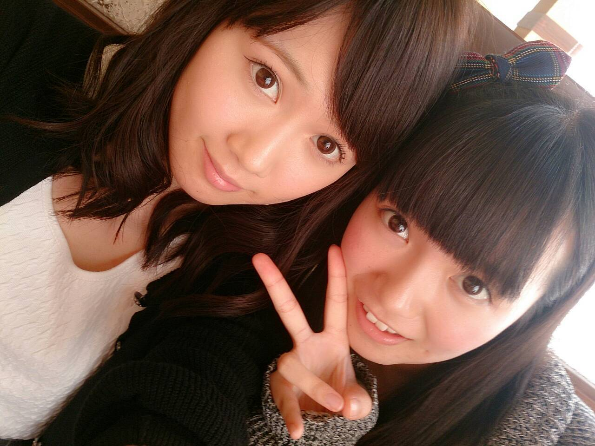
らりんに遊んでもらったの(っ´ω`c)♡
映画観て、ごはん食べて、
お買い物して、夜景も見たの！
幸せな1日だった❁
メンバーとお仕事を忘れて遊ぶの
そういえば久々だったなあ～
らりんはひめのお姉ちゃん♡
ありがとう！
ごはんごちそうさまでした～♪

 ひめたんの
ひめたんの
オススメのプリンはなんですか？チョコレートプリン！
他に美味しいとこ知ってるひと教えて～
全力でチェックします\( ˆoˆ )/
ひめたんが1番好きな季節は何ですか？春ですね、一番苦手なのは夏です
暑いからってよりも冷房が苦手なの
夏場でもクーラーは30℃が丁度いい。
最近勉強伸び悩んでるんですが
どうしたらひめかさんみたいに
頭良......（葛藤）なれますかね？大丈夫、心配しなくても
ひめたんは地頭いいからね( ´_ゝ`)
安心してひめかさんみたいに
頭良......
ひめたんは街中とかで､
『ん!これは腹減るだ～ろ』
って､匂いは何かな?質問とちょっと反れるけど
この前ね、街歩いてたらいきなり
地元にあったコロッケ屋さんの香りがして
お腹も空いたし
なんだか懐かしい気持ちになった\❁/
ひめたん、寝てる時に足が
"ビクン"ってなって飛び起きちゃう時ある？あーこれわかる！
というか頻繁に起こる時期がある！！
何なんだろうね(´・ω・｀)？
目覚める時どきどきするよね
インドカレーかけたらどうなるの？ 前回の醤油のノリだよねってことは
私に、ですか(；ω；)
私を何だと思ってるの(；ω；)
ひめたんの日記の
コメント欄下２ケタに46を踏んだ方へ
手書きでコメ返するコーナー
＼ ひめたん46 ／
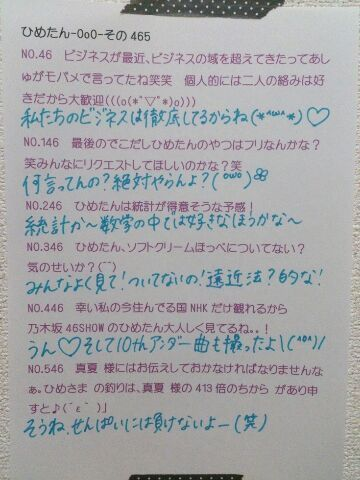
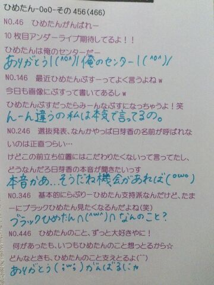
いつもたくさんのコメント
ありがとうございます
そういえばハロウィン本番近いけど
みんなはどんなふうに過ごすの？
ひめたんのハロウィンは
散々日記でみんなに報告したから
逆にみんなのハロウィンプラン聞きたい♡
(＊´・ω・＊)
更新500までもうちょっと～
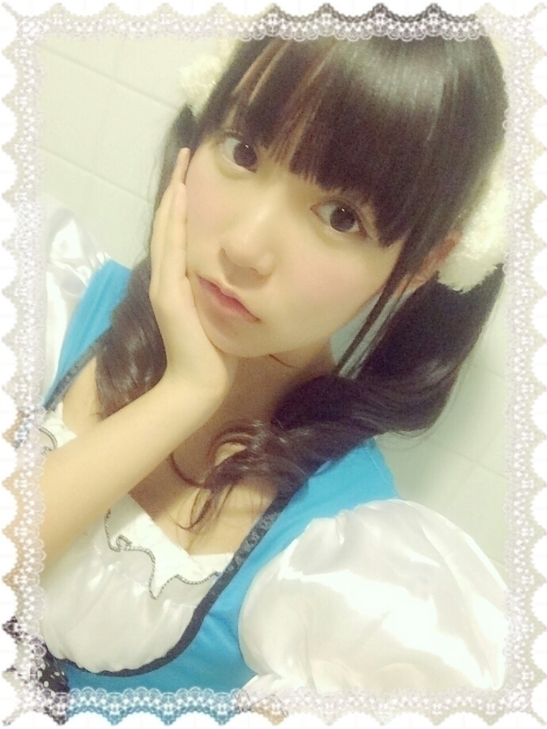
UTBさんにソログラビア
撮っていただきました\( ˆoˆ )/
UTBさんは1年ぶり！
去年のと見比べてみても
楽しいかもしれません～
撮影はとっても楽しかった♡♡
全てが私好みの企画\( ˆoˆ )/
10月24日発売のSamuraiELOさん
チェックしてみてください！
こちらは普段のひめたんとは
違った雰囲気で
撮っていただきました⊂( ˆoˆ )⊃
オフショットは次回の日記で載せるから
待っててね～\❁/
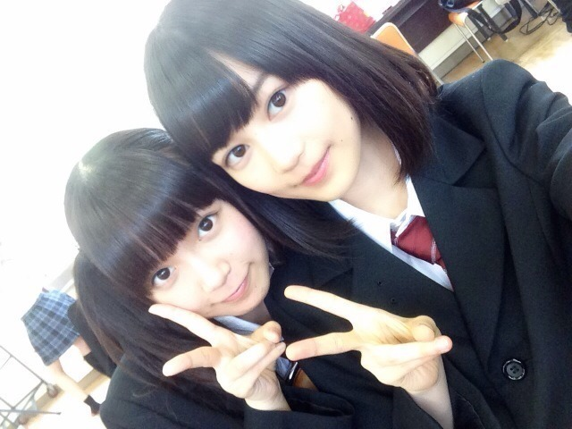
アンダーライブが終わって一段落。
この前のオフは久々に
おともだちとごはん食べたよ(＊´ω`＊)
なんだか、おともだちと
一緒に話していると
リラックスするんだよね❁
アイドルでいることを忘れて
ひとりのおにゃのこに戻る瞬間。
たまにこーゆー時間があるから
よしお仕事も頑張ろうって
なるんだよねーきっと！
みんな頑張ってるから
負けてられないなって思った1日でした。
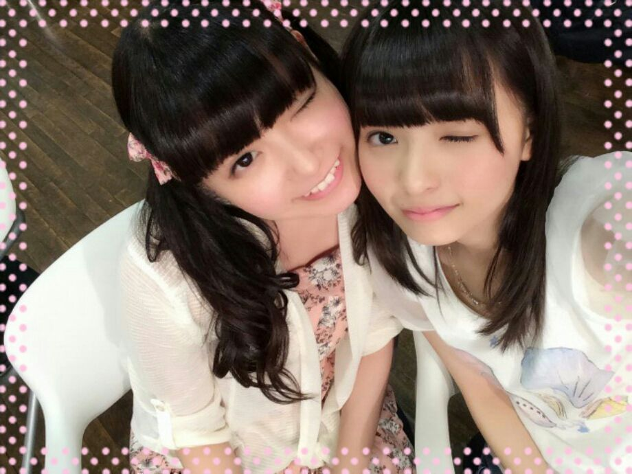
私ちょっと下手ね(ノ)･ω-(ヾ)
ホットドリンクの季節、
もふもふのお洋服が気になる季節。
りぼんも秋冬の素材が役に立つ季節！
体調も崩しやすい季節かな？
みなさんお気をつけて(´・ω・｀)
 ひめたんにとってライブとは？
ひめたんにとってライブとは？パフォーマンスするのが好きな私にとって
ライブ会場やステージの上は
ひとつのメインフィールドです。
ポムポムプリンカフェがオープンする
らしいけど、ひめたんは行く？これたくさんのひとが 教えてくれた
タイミングが絶妙すぎてもうっ！！
行けたら行きたいけれどひとりはな～
一緒に来てくれるひと......いないかな
よくぷりんにお醤油かけたら
うにの味になるって聞くけれど、
ひめぷりんにお醤油かけたら、、
どんな味になるんかな？なーんてうにが好きじゃないから
あんまりやる気にならんねそれ(´ºωº `)
私にお醤油？ぶっ飛ばしますね♡♡
 ひめたんってスマホカバー
ひめたんってスマホカバー
どんなの使ってる？☆今はカバーなしなの～
なかなかカバー見つからなくて
探してるところなんだ(´・ω・｀)
ひめたんの日記の
コメント欄下２ケタに46を踏んだ方へ
手書きでコメ返するコーナー
＼ ひめたん46 ／
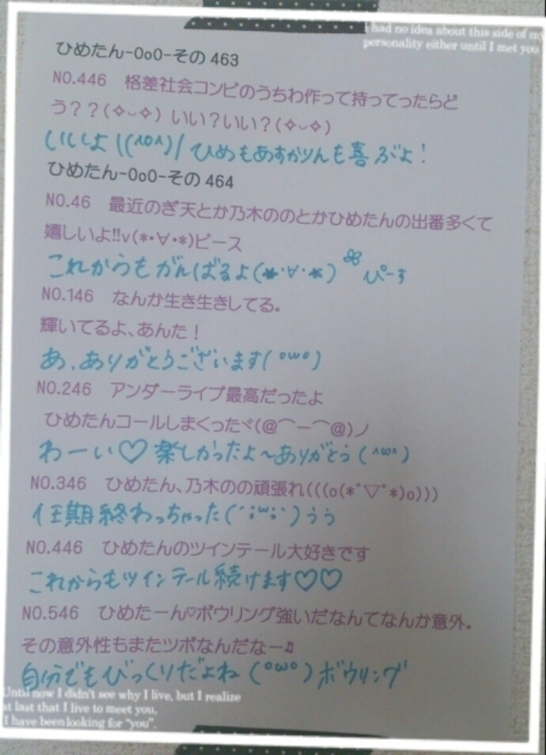
いつもたくさんのコメント
ありがとうございます！
3人の卒業は本当に悲しい......
みなさんのコメントからも
伝わってきました(；ω；)
ライブの感想もいっぱいありがとう♡
受験生さんは大変な時期みたい。
最後まで応援してます！
弱虫ペダルは
御堂筋くん一押しだけど
青八木くんも好き♡
「あ！いま喋った～！！」
ってなる(っ´ω`c)笑
#3は御堂筋くん回だし
青八木くん一生懸命叫んでたし
もう！もうっ！！
あとはーそうだな
スクフェスは凛ちゃんイベ頑張ってます
凛ちゃーん( ´ ▽ ` )
メイクさんに借りてた
月刊少女野崎くんのコミックも
やっと読み終わったの～
アニメにはないお話もあって
面白かったよ！
ひとりでクスクス笑ってた←
(＊´・ω・＊)
まず横浜個握。
来てくださったみなさん
ありがとう＼(^o^)／
お留守番ちーむのみなさん
報告するよ～
1・2部 ポムポムプリンちゃん
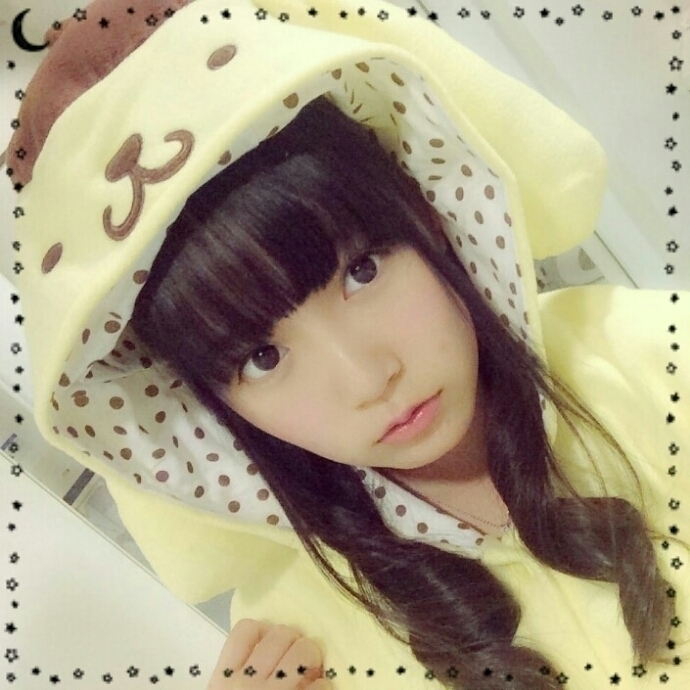
3・4部 リボンプリンセス
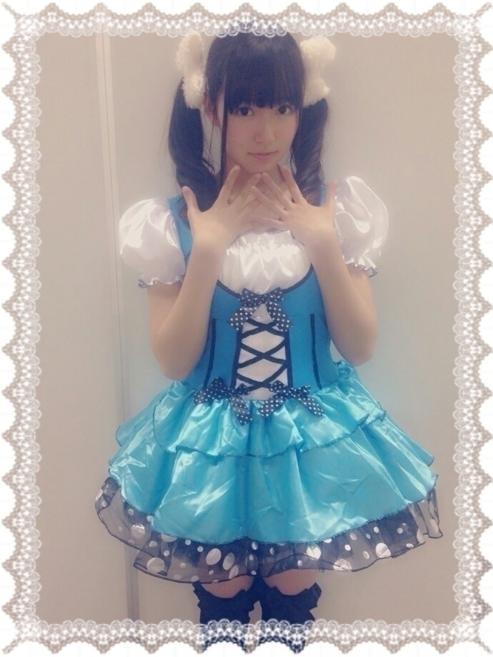
「リボンプリンセス」ってのは
この衣装のキャッチコピーとゆーか
パッケージにそう表記されてるの！
買うしかーってなるでしょ(゜ω゜)
そして気がつけば私
サンリオキャラクター大好きすぎる問題。
おにゃのこもだけど
ぼーいずも結構みんな
ポムポムプリンちゃん知ってて驚いた♡
アンダーライブの感想と
乃木どこ、のぎ天、
エンタメ、MARQUEE が多かったかな？
いつもチェックしてくれてありがとう♡
ハロウィンコスプレ
着ぐるみもワンピースも
どちらも誉めてもらったり(ノ)･ω･(ヾ)
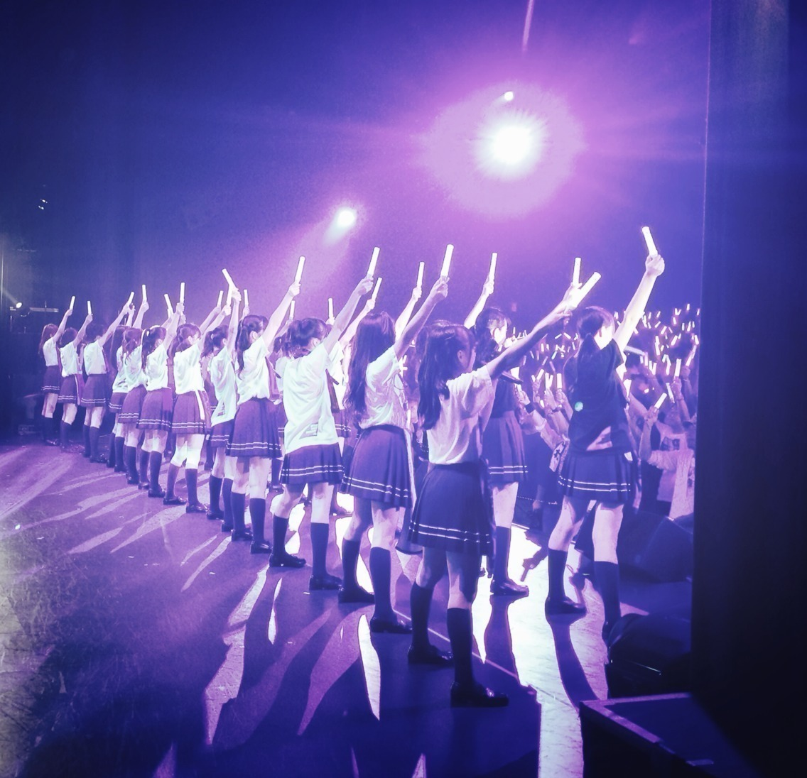
千秋楽を迎えました
アンダーライブ 2nd season
毎回いろんなドラマがありましたが
無事千秋楽を迎えることができました
みなさんの応援のおかげです。
この期間濃かったな～
毎日収穫があって充実してた気がする！
「1人MC」のコーナーは
ひめたんはトップバッター
5日の昼公演を受け持ちました\( ˆoˆ )/
それで、照明からBGMから
何から何までこだわりを持って
スタッフさんにお願いをしましたよ～
「さようならひめたんびーむ」という
茶番劇をしました、ふざけた茶番のわりに
結構ガチで準備しました(笑)
私プレゼンってゆーか
こーゆー作業するの好きやなって
改めて思った(´-ω-`)
真面目の血が騒いだんだねきっと♡♡
5日昼公演行ったひとで
なんで僕の私の推しメンじゃねーんだよ
って思ったひとも
付き合ってくれてありがとう！
ライブ本編は
パフォーマンスにこだわった2nd。
「魅せる」ことに重点を置き
ダンスremixを作っていただいたり
乃木坂の楽曲にオリジナルの振り付けを
つけていただいたりしてみたんだけど
どうだったかな⊂( ˆoˆ )⊃？
個人的にはアンダーライブで
「バレッタ」を踊れたのが
とても嬉しかった！
前回のアンダーライブでは
1期生のみんなで披露できなくて
正直相当ショックだったの(笑)
だから今回は「バレッタ」を自分の
オリジナルフォーメーションで
歌うことができて良かった(＊´ω`＊)
「月の大きさ」「音が出ないギター」は
アンダーライブ初パフォーマンス。
どちらもアンダーライブver.に
構成し直していただいて
とってもかっこいいの！
「月の大きさ」は
一瞬ですがソロダンスパートがあって
スポットも独占できて最高でした～
そして「ガールズルール」❁
この曲は前回に引き続き
センターを努めさせていただきました
本当にありがたいです(；ω；)
オリジナルの「ガールズルール」に
まいやんの色があるように
今回はひめたんの色が
出せたらいいなと思いながら
頑張りましたよ～
ライブの回を重ねるごとに
次はこうしよう、ああしようって
いろいろ試してみたりして。
来てくれたみなさんの
感想が聞きたいな～
今回行けなかったんだってみなさんも
次もしライブする機会があったら
待ってるよ(っ´ω`c)
そうそう、イジリーさんやクロちゃんさん
他にもたくさんの方が
遊びに来てくれました！
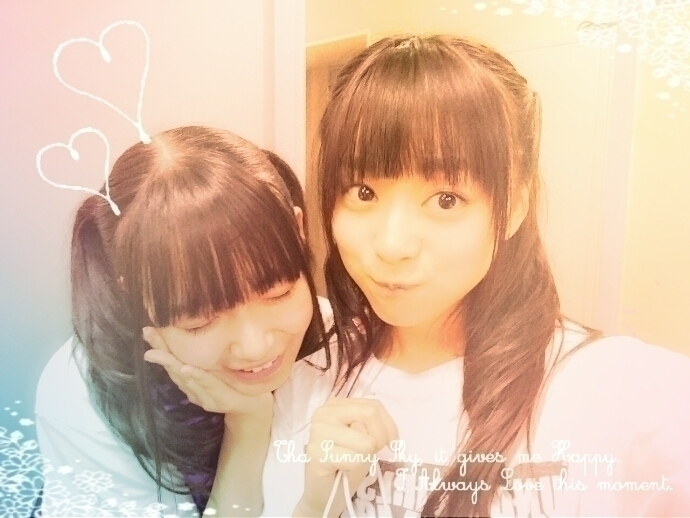
最後に3人が卒業しましたね
お疲れ様！今までありがとう\( ˆoˆ )/
京ちゃんは
お誕生日が1日違いで
勝手に親近感を抱いてたの～＊
お勉強も頑張っていて
偉いなっていつも思っていたよ！
NOGIBINGO!2で面白いキャラも知って
いろんな顔を持っているんだなって
いつも会うのが楽しみだったよ
りしゃこは
のほほーんとしてて
みんなすっかり癒されたよね！
真面目で、連絡もちゃんとしてて
ごめんなさいとかありがとうが言える
優しい子ってイメージ。
りしゃこには夢があるんだよね？
叶いますように☆
寧々......
ひめたんはいつもふわふわしているようで
実は冷めたところもあるので(笑)
寧々のテンション感が居心地が良くて
大好きでした。
寧々はこれからやりたいことが
ハッキリしてるって言ってたから
その言葉を信じてずっと応援します( ˇωˇ )
アンダーライブで涙頃歌ってて
もう寧々と一緒に歌えるのは最後なんだって
一気に寂しくなってきて
大泣きで最後はまともに歌えてなかった......
涙頃はたくさん披露してきたけど
あんなに歌詞が染みた日はなかった～
乃木坂が在る限り
涙頃は寧々の曲として
ずっと語り継がれていくんだろうな。
3人とも自分と向き合って決断して
本当に尊敬します(；ω；)
不安になることも
あるかもしれないけれど
私が活動を頑張ることで3人の
背中を押していけるようになりたい。
自分で決めた道だから
自信持って 頑張ってね！
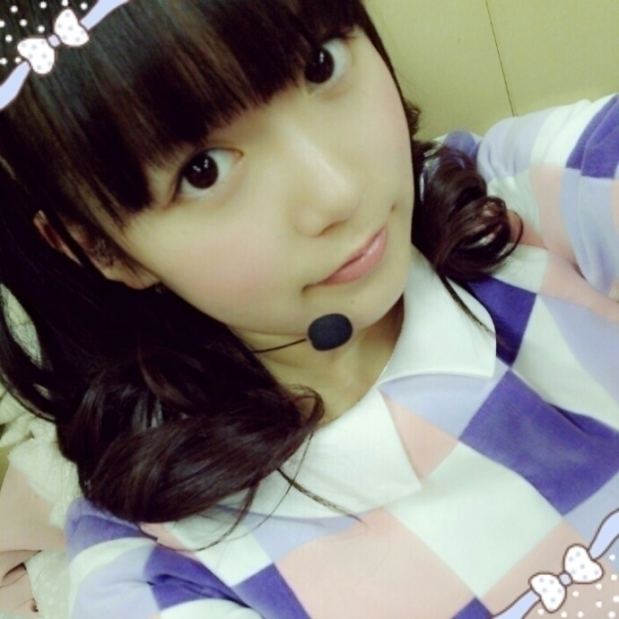
長くなっちゃったので
今日は質問返しおやすみさせてね
ごめんね( >_< )
でもちゃんと読んで元気もらってるよ♡
この期間で改めて
私に関わってくださるすべての方の
存在の大きさを感じました
いつもありがとう！
(＊´・ω・＊)
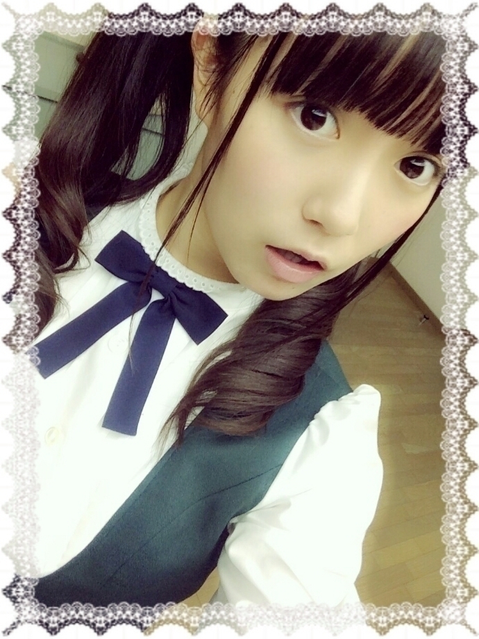
ひめツイン ⌒(｡･.･｡)⌒
メルヘンなツインでしょーって
前回の日記に書いたら
「ひめツイン」って命名してくれた～
高めの後ろめで結んで内巻き♡
NOGIBINGO!3
#2告知してなかった～(>_<)
観てくれたかな？
玲奈さんNOGIBINGO!初登場！
玲奈さんは「ひめた～ん♡」って
いつもかわいがっていただいて
本当に尊敬する先輩です。
クイズはちょっと難しかったけどね
水がこぼれるなんてわかんないよ(笑)
未央ちゃん18歳おめでとう\( ˆoˆ )/
私たち同い年～♡
ひめは未央ちゃんままも大好き！
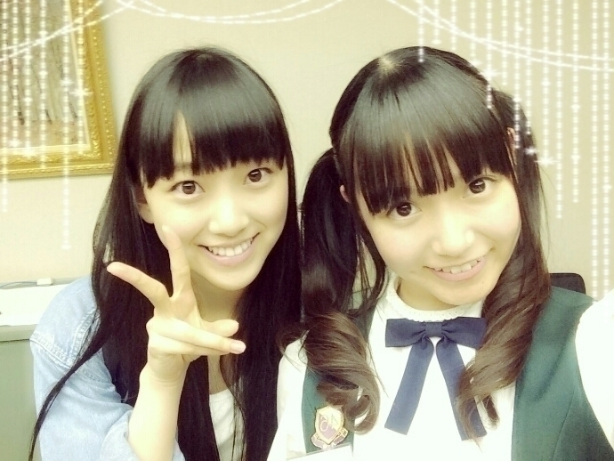
アンダーライブはラスト2公演\❁/
昨日はせっちゃん来てくれました
せっちゃん頑張ってる！尊敬！
昨日やっと全員揃って
ステージに立つことが出来ました
ひとりでも欠けちゃだめね(´；ω；｀)
毎日いろんなことがありましたが
こうして25名全員で
出演できることができて幸せです
10thアンダー・研究生の集大成
寧々の最後のステージ
最後までどうか見届けてください。
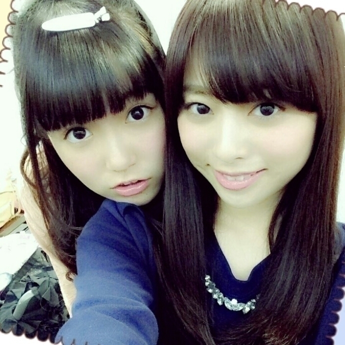
っとその前に明日は個握ね～
行くよーってみなさん
楽しみにしてます♡
ハロウィンの季節なので
ひめたんはハロウィン仕様の
お洋服を着るよ(ノ)･ω･(ヾ)
お留守番ちーむのみんなは
日記で報告するから待っててね～
最後に告知というか報告というか
週プレさんに取材していただきました☆
発売日とかはまた追って
お知らせさせてくださいね～
最近雑誌にも登場する機会が増えて
本当にありがたいこと／(^o^)＼

 万理華さんも小百合さんもひめたんも
万理華さんも小百合さんもひめたんも
同じくらい大好きなんですが、ライブで
その3人に推してます！と伝えるには、
どうすれば良いですか？そうだね、例えば
万理華コールをしながら
小百合タオルを首にかけて
ひめたんカラーのサイリウムを降るとか
そーゆーこと？(笑)
今家で飼ってる今年で10歳になる
トイプードルのあだ名を
ひめたんに考えて欲しいなー
今までのあだ名は？ひめたんがあだ名を新たに命名したら
そ、そのわんちゃんの10年間は
どうなるの(´；ω；｀)うぅ......
怒られた時にどうやって
立ち直ることができますか？基本的にあんまり引きずらないタイプなので
寝たらスッキリする私は
幸せガールなのかしら\( ˆoˆ )/＊
ひめたんが気になるー！
今からでもひめたん推しになっても
いいですか！？もちろんもちろん♡
嬉しい～ありがとー\( ˆoˆ )/
 もしかしてだけど〜
もしかしてだけど〜
もしかしてだけど〜
俺ってひめたん大好きなんじゃないのぉ〜そーゆーことだろぉ～♪
ひめたんの日記の
コメント欄下２ケタに46を踏んだ方へ
手書きでコメ返するコーナー
＼ ひめたん46 ／
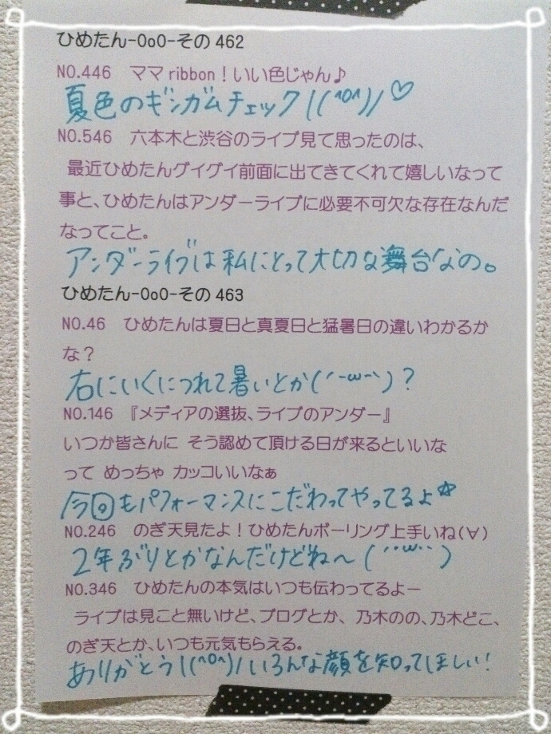
いつもたくさんのコメント
ありがとうございます！
前から応援してくださっているひとには
ひめたんコメント増えたね～って
言っていたたけることが多くて
もうにやにやしちゃう( ´ ▽ ` )
でも、なんていうか
ひとつひとつ大切に読む習慣は
ずっと昔のままだからね♡♡
最近ミルクティーの摂取率が高い。
ままの娘なんだな～
実はこの前のアンダーライブ
ままと妹が観に来てくれたんだけどね
その時にメンバーのみんなから
「ひめたん ままとそっくり！」
って言われた(゜ω゜)ぱ
芯のしっかりしてるひと
ステキだなって思うんだよね
それでは横浜・六本木で会いましょう！
(＊´・ω・＊)